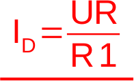
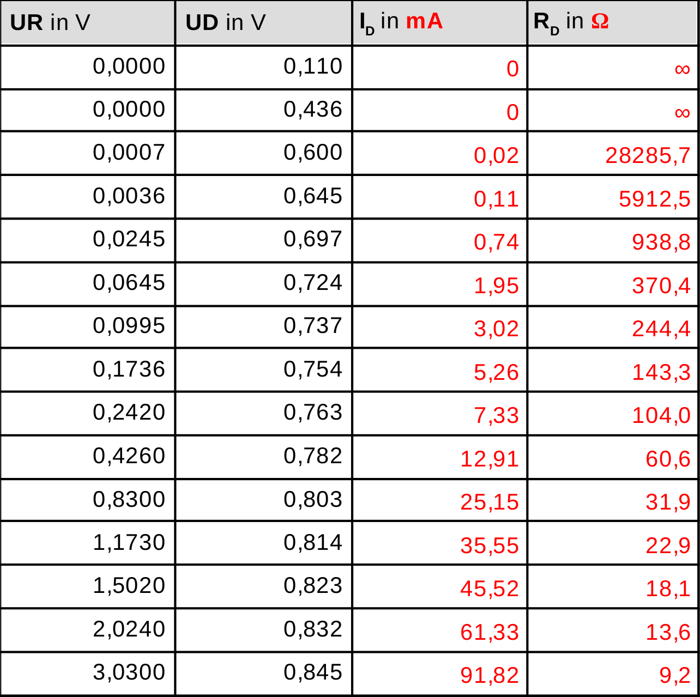
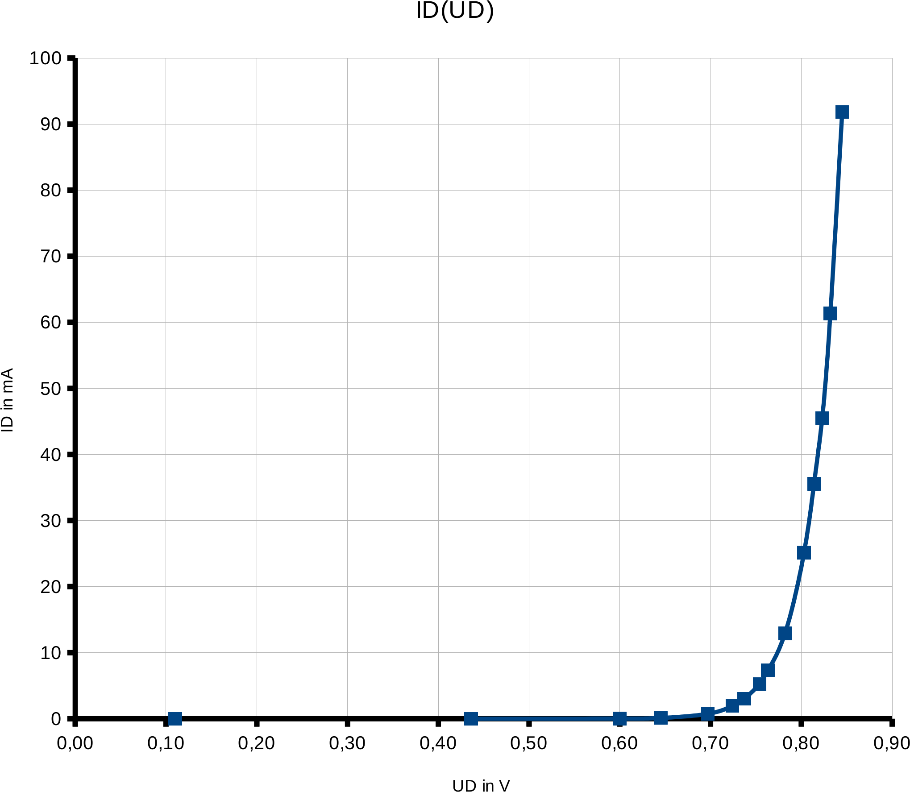
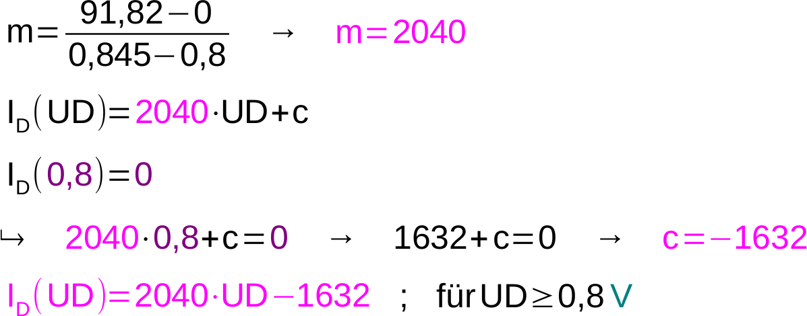
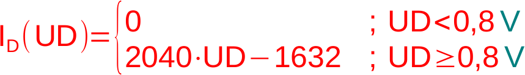
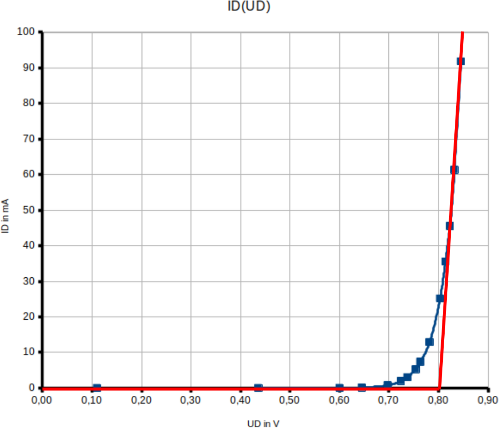
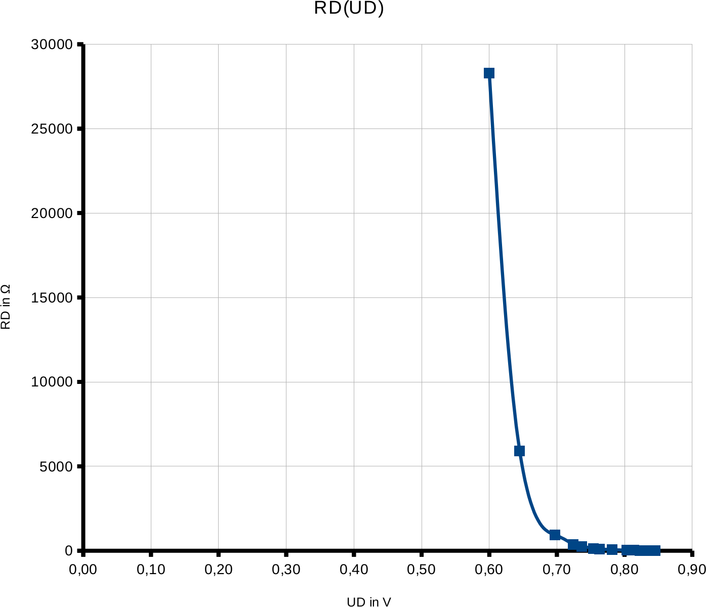
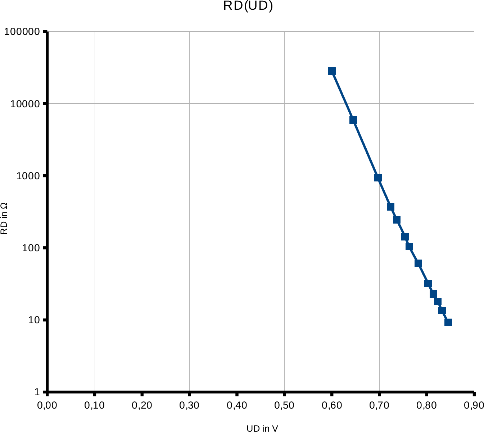

Halbleiter: Dioden
Lösungen
Aufgabe i.1 a
Der Widerstand hat zwei wesentliche Funktionen:
-
Die Diode wird geschützt, da der Widerstand den Stromfluss begrenzt.
-
Der Widerstand fungiert als Messwiderstand. Durch das Messen der Spannung, die am Widerstand abfällt, kann der Gesamtstrom berechnet werden.
Außerdem ist eine Spannungsmessung immer einfacher zu bewerkstelligen, da die Schaltung dazu nicht verändert werden muss.
Aufgabe i.1 b

Aufgabe i.1 c
Aufgabe i.1 d

Diagramm:

Aufgabe i.1 e
Die Zuordnung von UR zu UD ist nicht eindeutig.
Daher kann es sich bei der Kurve UD(UR) nicht um eine Funktion im mathematischen Sinne handeln.
Aufgabe i.1 f
Eine mögliche Bereichsgrenze wäre UD=0,8V.
Die Messkurve könnte dann durch eine waagrechte Gerade und eine steigende Gerade, die beide durch den Punkt UD=0,8V, ID=0mA verlaufen, angenähert werden.
Aufgabe i.1 g
Bestimmung der Geradengleichung durch die Punkte A(0,8|0) und A(0,845|91,82):

Dadurch ergibt sich folgende Funktionsgleichung für eine Näherungsfunktion:


Aufgabe i.1 h
Diagramm in linearer Skalierung:

Diagramm in logarithmischer Skalierung:

|